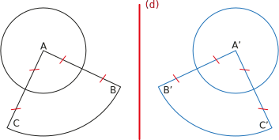

|
E8
|
- Propriétés de la symétrie
|
Activité Introduction

Dans la figure ci-dessus, B, C et D sont alignés et ABC est un triangle équilatéral. A appartient à l'axe de symétrie (d).
- Construire l'image de la figure par la symétrie d'axe (d). On utilisera la notation des points images A', B', C' et D'
- Que peut-on dire des points B', C' et D'
- Que peut-on dire du symétrique du cercle de centre D de rayon CD ?
- Quelle est la mesure de l'angle $\widehat{B'A'C'}$ ?
- Quelle est la nature du triangle A'B'C'
Propriétés :
Propriétés :
- Une symétrie axiale conserve les propriétés géométriques et les mesures.
- Si trois points sont alignés, alors leurs symétriques par rapport à un axe sont aussi alignés.
- Si deux angles sont symétriques par rapport à un axe, alors ils ont la même mesure.
- Si deux figures sont symétriques par rapport à un axe, alors elles ont le même périmètre et la même aire.
Exemple :
Le symétrique d'un point se trouvant sur l'axe de symétrie est lui-même.
Application :
On peut utiliser les propriétés de la symétrie axiale pour construire le symétrique d'une figure en plus rapidement.
Exemple :

Pour construire le symétrique de la figure, il suffit de construire le symétrique des différents points. On peut alors utiliser les propriétés de la symétrie axiale pour construire les arcs de cercle car les longueurs sont conservées.